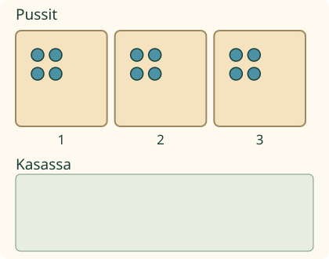
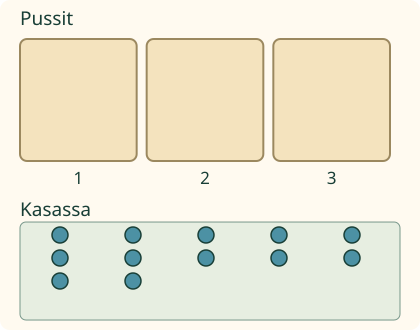

Aava purkaa merkkipussit ja pakkaa samat merkit takaisin. Miten jako liittyy kertolaskuun?
Samat merkit, kaksi jakokysymystä
Yhdistän yhtä suuret ryhmät ja puran kertolaskun. Kolme pussia, neljä merkkiä jokaisessa: 3 × 4 = 12.

Kun pakkaat 12 merkkiä neljä kerrallaan, tulee 3 pussia: 12 : 4 = 3. Kysyttiin pussien määrää.
Ilman liikkuvaa kuvaa: kokoa 3 ryhmää, jokaisessa 4 merkkiä. Pura kaikki 12 kasaan. Pakkaa 4 kerrallaan ja laske ryhmät. Jaa sitten 12 merkkiä kolmeen ryhmään tasan.
Entä kun pussien määrä tiedetään?

Jaa 12 merkkiä kolmeen pussiin tasan. Jokaiseen tulee 4: 12 : 3 = 4. Nyt kysyttiin yhden pussin sisältöä.
Ennusta: onko vastaus 4, kun kysytään montako neljän merkin pussia saa kahdestatoista?
Katso ajatus
Ei. Neljä on yhden pussin sisältö. Pusseja tulee kolme. Tarkista: 3 pussia ja 4 jokaisessa on 12. Neljä neljän merkin pussia tarvitsisi 16 merkkiä.
Sama yhteys korttirasioissa
Neljä rasiaa, viisi korttia jokaisessa: 4 × 5 = 20. Kaksikymmentä korttia viiden rasioihin antaa 4 rasiaa. Neljään rasiaan tasan jaettaessa jokaiseen tulee 5.
Apua
Katso, mitä kysymys kertoo valmiiksi: yhden pussin sisällön vai pussien määrän. Puuttuva luku löytyy jakamalla koko määrä. Tarkista kertomalla pussien määrä ja yhden pussin sisältö.
Mallin kaksi jakotapaa voi toistaa ja askeltaa. Se on apu, ei pakollinen katselutehtävä. Jakolaskun lukupaikkoihin kelpaa kumpi tahansa tämän perheen pätevä jako.
Tutki lisää
Kolme ja kolme antavat yhdeksän. Nyt molemmista jakotavoista tulee sama lasku 9 : 3 = 3. Kahta erilaista laskua ei tarvitse keksiä.
Yksi neljän merkin pussi: 1 × 4 = 4, 4 : 4 = 1 ja 4 : 1 = 4. Tulo ei siis aina ole suurempi kuin kumpikin kerrottava.
Opettajalle ja ilman ruutua
Vuosiluokat 1–2, procedure/atomic. Vaadittu JA-ryhmä on M-MUL-01, M-DIV-01 (ositusjako) ja M-DIV-02 (sisältöjako). Ei uutta kertotaulun muistamisen, puheen, nimeämisen tai ylimääräisen laskutaputuksen porttia. Lukualue on tässä enintään 20 merkkiä; tarkistuksen kenttäraja on 0–40.
Jokainen alkuperäinen merkki säilyy pussissa, kasassa tai liikkeessä. Koko, koko määrä ja ryhmälukujen merkitykset eivät vaihdu salaa. Sisältöjaon mallissa täytetään pusseja peräkkäin, ositusjaon mallissa jaetaan kierroksittain annettuihin pusseihin. Malli näyttää saman lopullisen pussimäärän ja sisällön eri jakoreiteillä. Purku kestää mallissa noin sekunnin ja täyttö 0,45 sekuntia merkkiä kohden. Askellus siirtää yhden merkin. Tahti on havainnollistus, ei mitattu pakkausaika.
Numerotehtävä kysyy oman kontekstinsa määrää. Sen kysymyksen vaihto ei tee vanhasta vastauksesta uuden kysymyksen hyväksyntää. Valinnainen jakolaskun täydentäminen on erillinen tehtävä ja hyväksyy molemmat perheen jaot; yhtäsuurille tekijöille ei vaadita kaksoiskappaletta. Valmiit merkit rajaavat rakentamista: tästä ei väitetä vapaan laskulauseen tuottamista.
Oletustapaukset ovat positiivisia kokonaislukuryhmiä. Nollalla jakamista ei sallita eikä jakamisen väitetä aina pienentävän kaikilla luvuilla. Sama merkkimäärä voi muodostua monesta ryhmittelystä, mutta annettu kysymys rajaa, mikä tunnetaan ja mitä etsitään. Ilman ruutua käytä merkkejä ja rasioita, pura ja jaa kahdella tavalla. Tuettu ruutuvastaus ei osoita fyysistä pakkaamista, itsenäistä strategiaa, säilyvyyttä tai formaalia hallintaa. Ei henkilöhistoriaa tai vaikuttavuusväitettä.
Lopuksi: miten kertolasku tarkistaa tekemäsi jaon?
 Aava purkaa merkkipussit ja pakkaa samat merkit takaisin. Miten jako liittyy kertolaskuun?
Aava purkaa merkkipussit ja pakkaa samat merkit takaisin. Miten jako liittyy kertolaskuun?